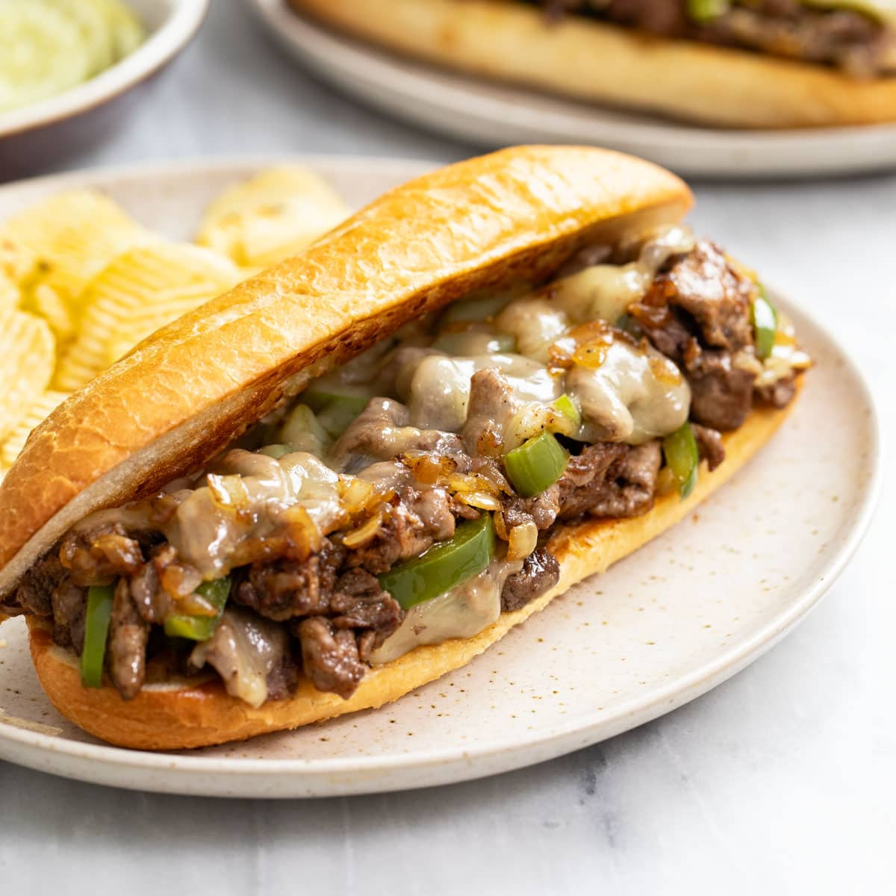

Philly Cheesesteak

Description
This Philly cheesesteak is made with sirloin sliced into strips and seasoned with a delicious blend of herbs and spices for a flavorsome sandwich. Sometimes I toast the hoagie roll before topping it with the steak, caramelized onions, peppers, and cheese.
Ingredients
- ½ teaspoon salt
- ½ teaspoon black pepper
- ½ teaspoon paprika
- ½ teaspoon chili powder
- ½ teaspoon onion powder
- ½ teaspoon garlic powder
- ½ teaspoon dried thyme
- ½ teaspoon dried marjoram
- ½ teaspoon dried basil
- 1 pound beef sirloin, cut into thin 2 inch strips
- 3 tablespoons vegetable oil
- 1 onion, sliced
- 1 green bell pepper, julienned
- 3 ounces Swiss cheese, thinly sliced
- 4 hoagie rolls, split lengthwise
Steps
- Gather all ingredients.
- Mix salt, pepper, paprika, chili powder, onion powder, garlic powder, thyme, marjoram, and basil together in a small bowl.
- Place steak in a large bowl; sprinkle seasoning mixture over top and stir to coat.
- Heat 1/2 of the oil in a skillet over medium-high heat. Add steak in batches if needed to avoid overcrowding the skillet; cook until browned and just cooked through. Transfer cooked steak to a plate.
- Heat the remaining oil in the skillet. Add onion and green pepper; cook and stir until tender and caramelized.
- Preheat the oven on the broiler setting. Divide cooked beef between the bottoms of 4 rolls.
- Layer with onion and green pepper.
- Top with sliced cheese. Place on a cookie sheet.
- Broil in the preheated oven until cheese is melted.
- Cover with tops of rolls and serve.